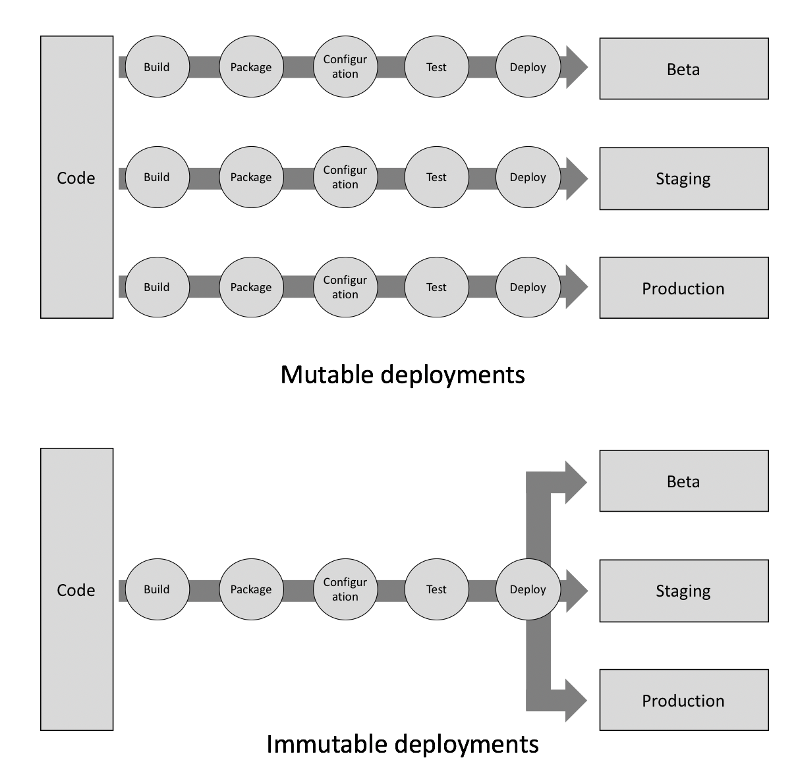

不可变基础设施 #
是什么 #
定义
Immutable infrastructure refers to servers (or VMs) that are never modified after deployment.
Automate the setup and deployment for every part and every layer of your infrastructure.
Never change any part of your system once it is deployed. If you need to change it, deploy a new system.
immutable infrastructure is a model in which no updates, security patches, or configuration changes happen “in-place” on production systems. If any change is needed, a new version of the architecture is built and deployed into production
优势 #
- 基础架构是一致且可靠的，这使测试更加简单
- 部署更简单，更可预测
- 每个部署都是版本化和自动化的，因此轻松进行环境回滚
- 错误，配置偏差和雪花服务器已完全缓解或消除
- 在所有环境中部署均保持一致
- 借助云服务，轻松实现自动扩展
